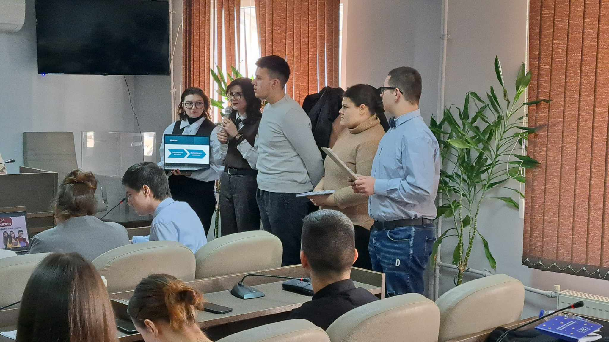
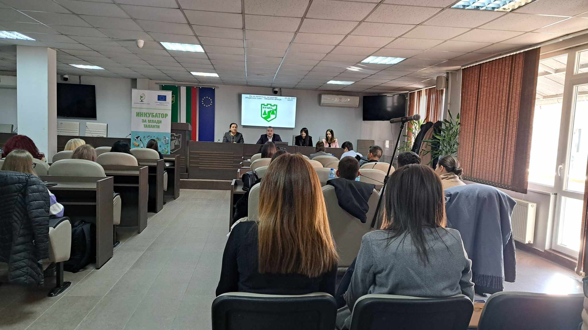

Strong participation of students from the Profiled Science and Mathematical High School "Acad. Ivan Tsenov "Vratsa in the "Incubator for Young Talent"

Strong participation of students from the Profiled Science and Mathematical High School "Acad. Ivan Tsenov "Vratsa in the "Incubator for Young Talent", organized by the "Association of Young Scientists". The event aims to provide an opportunity for \young scientists to present their scientific achievements.
As part of the first day of the initiative, the youth spent several hours teaming up in teams around an idea in areas of environmental conservation, infrastructure, social entrepreneurship and economic development.
On Monday the 10th. February, at a peculiar round table, they briefly presented their ideas:
- Clean Future for trash can sensors and an event to raise awareness about garbage recycling among the public.
- Mobile transportation application with statistics and routes optimization.
- A "Second Chance for Life in the Villages" for a relationship between business and dual education. Possibility for the Future - to support children deprived of parental care for university education through a mentoring program.
- Aquasmart hardware and software for effective management of water resources.
Deputy took part in the forum. -mayor of Vratsa Municipality Petya Dolapchieva, Chairman of the Municipal Council - Vratsa, Vladimir Hristov, representative of TPP, Maya Milova, Borislav Boev from the Kozloduy Novi Powers NPP and representatives of business, education and administration, scientific organizations and NGOs sector and funded by the project of the Association of Young Scientists program Erasmus+ of the European Union.
Some of the participating young people from the mathematical high school are junior ambassadors of the programme for schools ambassadors to the EP and students from the Erasmus+ club, who were accompanied at the event at the presentation by Senior Ambassador Ivalina Ivanova and Lubina Karamelska, who are working on the project Jean Monet - EU introduction initiatives.